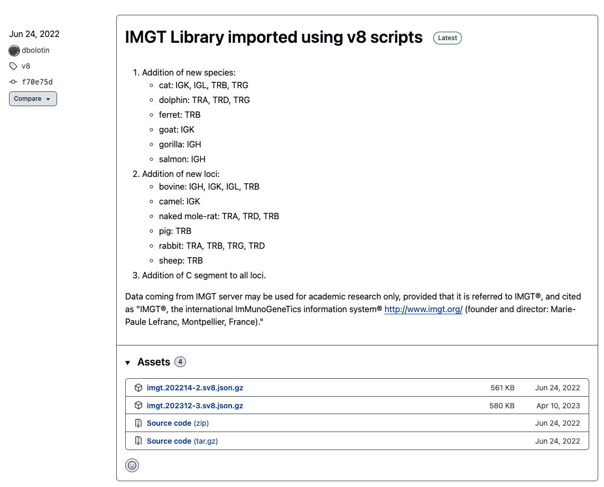
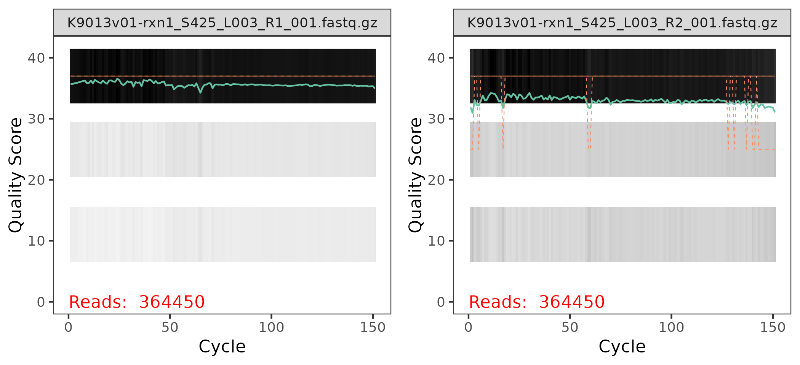
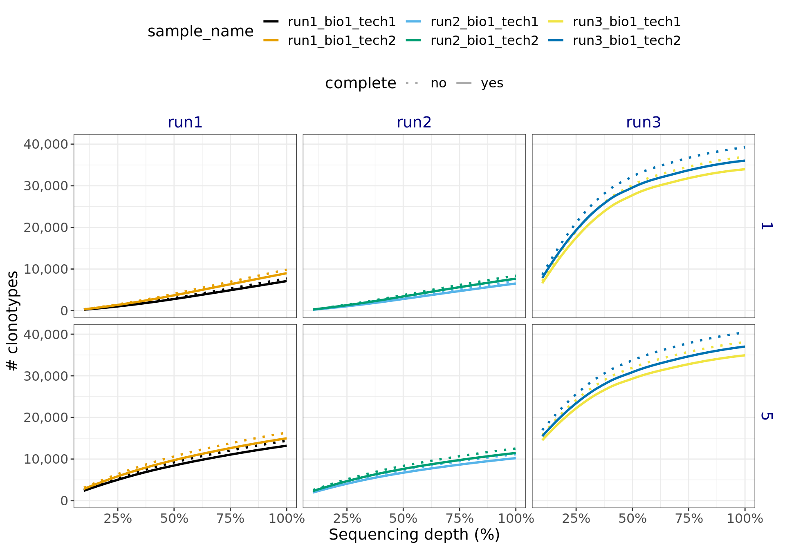

Analysis of Canine TCR data from Zuleger et al 2024
For this example, we assume that SatTCR is already downloaded, snakemake and docker are already installed in the system, and that the docker images are already pulled, i.e. we assume that the first steps of the Getting started page are already done.
We also assume that we are located in the SatTCR directory after cloning the repository:
git clone git@github.com:Ong-Research/SatTCR
cd SatTCRAdditional files to download
- MIXCR’s license: This can be downloaded from their website: https://mixcr.com/mixcr/getting-started/milm/. We rename the file as
license_mixcr, and the name is coded in themixcr/license_filefield in the config file. - IMGT reference file: This can be downloaded from the
repseqiorepository release: https://github.com/repseqio/library-imgt/releases. In the screenshot below, we can see that the IMGT file could beimgt.202214-2.sv8.jsonafter decompressing it.
Making the samples.csv file
The name of this file is coded in the config file samplefile entry. For the moment, we assume that the sequencing files are located in the data folder. For example, in this repository, we have the following files:
ls data
data/K9013v01-rxn1_S425_L003_R1_001.fastq.gz
data/K9013v01-rxn1_S425_L003_R2_001.fastq.gz
data/K9013v01-rxn2_S426_L003_R1_001.fastq.gz
data/K9013v01-rxn2_S426_L003_R2_001.fastq.gzThese are two paired RNA-seq files corresponding to two samples; so the samples.csv looks as:
sample_name,sample_file
run1_bio1_tech1,data/K9013v01-rxn1_S425_L003
run1_bio1_tech2,data/K9013v01-rxn2_S426_L003The first column is the name that is going to be used for the respective samples, and the second one is the name of the file until the “_R1” / “_R2” parts. The remaining part of the file names is defined in the suffix entry of the configuration file. In the case of these two files, that is _001.fastq.gz.
Running the pipeline
Quality control
The quality control module of the pipeline does the following:
Runs
fastqcfor every sequencing file, and gather all the results in amultiqcreport.Uses
dada2’s to plot quality profiles.
The underlying assumption for this step is the that docker images for the fastqc, multiqc and rquarto have been installed already. After this steps are completed, then run with 4 cores:
snakemake -c4 qcThe quality profiles are saved in the figs directory, and one of them looks like:

Each panel in the plot correspond to one of the sequence files for the sample:
The x-axis corresponds to the nucleotides in the sequences, labeled as
Cycles, and the y-axis correspond to the quality score for each nucleotide in each sequence.In the background of each panel, there is a heatmap indicating the % of nucleotides at the \(i\)-th position among all sequences with a given quality score. The black bars at the top means that the majority of the nucleotides have a high score.
The green line is the avg. score at each position, where the orange line are the median (full) and 25% / 75% quantiles (dashed). These lines and the grey shades below 30 indicate that there are few sequences that need to be trimmed.
Generally we could expected:
The quality scores at the R2 end panel are a bit noisier than the ones in the R1 end panel.
The quality scores at the end of the sequences tend to be equal or lower than the ones a the start of the sequences.
Trim sequences
This step assumes that the docker’s trimmomatic image has been already installed. Then, following the previous section, we know now that we need to trim the sequences. The tail at the end of the R2 panel indicates that there are a few sequences with QC score < 20, so we remove the parts after that QC score is reached with the TRAILING:20 option. There could be some remaining small fragments, and we remove the short fragments with length of 100 of less with the MINLEN:100 option.
trim:
trimmer: ["TRAILING:20", "MINLEN:100"]More documentation on trimmomatic’s options are in their website. We run this module with:
snakemake -c4 trimClonotype assembly
The main line to pay attention in the config file is the mixcr/params line. We used:
rna-seq --species dog -b imgt.202214-2 --rnawhich means that our primers look line the rna-seq configuration from the MIXCR’s list of pre-set configurations. The species is dog, and the TCRB V and J gene sequences are obtained from the imgt.202214-2 file (that we already downloaded and decompressed). MIXCR is very flexible, and provides an extensive list of pre-set options.
The clonotypes are assembled using the command:
snakemake -c4 mixcrNote: There are other available species:
Available species for TCR \(\beta\) chain
Human, Mouse, Ma’s night monkey, Rhesus Monkey , Rainbow trout, Dog, Ferret, Rabbit, Pig, Cat, Sheep, Camel, Crab-eating macaque, Naked mole-rat, Bovine, Mouse C57BL/6J, Gorilla
Sampling of the sequencing files and saturation analysis
There are two fields that are important for this section:
seed: [54232, 65432]and
saturation:
samples: ["run1_bio1_tech1", "run1_bio1_tech2"]
bootstrap_replicates: 10 # 200
# only one of block_size or nblocks is supposed to be Null
block_size: Null
nblocks: 10This step samples pairs of sequences from the trimmed files corresponding to the tech1 and tech2 samples. The way it works is that for each random seed, it splits the paired sequence file into 10 blocks, in this case each block with 10% of the trimmed sequences, and then samples orderings among the 10 blocks. For example, an ordering could be 5, 4, 1, 2, 3, 6, 7, 8, 9, 10 and this will result with the 10% sequence file being block 5, the 20% sequence file being blocks 5 and 4 together and so on.
In general, this steps generated nblocks \(\times\) bootstrap_replicates \(\times\) # of seeds paired-sequence files for each one of the samples that were defined. This means that in our current scenario, we are generating \(2 \times 2 \times 10 \times 10 = 400\) pairs of files.
This module is run using:
snakemake -c4 samplingFor this step we suggest to use few seeds, and don’t divide the files into too many blocks. Then, to assembly the clonotypes of these files, we run the saturation module using:
snakemake -c4 saturationBuilding the report
If the previous steps worked, then this is run using:
snakemake -c4 reportThe n_inter field, is used to determine how many intersections to consider when plotting the # of shared clonotypes among samples.
The details of the report are coded in the summary section of the configuration file:
summary:
min_count: 5 # min. # of times of repeats to consider a clonotype
vj_quantile: .15 #
groups: {
"run1": ["run1_bio1_tech1", "run1_bio1_tech2", "run1_bio2_tech1", "run1_bio2_tech2"],
"run2": ["run2_bio1_tech1", "run2_bio1_tech2", "run2_bio2_tech1", "run2_bio2_tech2"],
"run3": ["run3_bio1_tech1", "run3_bio1_tech2", "run3_bio2_tech1", "run3_bio2_tech2"]}The groups part indicate which samples correspond to each group. In this case, the groups correspond to biological replicates, but it may well correspond to conditions or any other characteristics considered in the experiment.
The complete report is available in add link. For the saturation analysis, this will generate figures like Figure 2. When the sequencing depth is too low, the growth is going to look approximately linear (like in the run1 and run2 panels), but if the # of sequences is adequate then the growth will show decreasing increments like in the run3 panel.

Complete configuration file:
The complete config.yaml file looks like:
# general configuration files
samplefile: "samples.csv"
seed: [54232, 65432]
run_mixcr: true
run_saturation: true
run_report: false
# The repertoire_assembly pipeline assumes that for a sample
# both end files have names of the form
# dict[sample] + "_R1" + {suffix}
# dict[sample] + "_R2" + {suffix}
suffix: "_001.fastq.gz"
# docker images
docker:
run_line: "docker run -v $(pwd):$(pwd) -w $(pwd) -u $(id -u):$(id -g)"
fastqc: "staphb/fastqc"
multiqc: "staphb/multiqc"
trimmomatic: "staphb/trimmomatic"
rquarto: "tcr/sat"
mixcr: "ghcr.io/milaboratory/mixcr/mixcr:latest"
# trimmomatic parameters
trim:
trimmer: ["TRAILING:20", "MINLEN:100"]
mixcr:
params: "rna-seq --species dog -b imgt.202214-2 --rna" # more presets can be seen https://docs.milaboratories.com/mixcr/reference/overview-built-in-presets/
# license_file: "/path/to/license/file"
license_file: "./license_mixcr"
report:
n_inter: 17
saturation:
samples: ["run1_bio1_tech1", "run1_bio1_tech2",
"run2_bio1_tech1", "run2_bio1_tech2",
"run3_bio1_tech1", "run3_bio1_tech2"]
bootstrap_replicates: 10 # 200
# only one of block_size or nblocks is supposed to be Null
block_size: Null
nblocks: 10
summary:
min_count: 5 # min. # of times of repeats to consider a clonotype
vj_quantile: .15 #
groups: {
"run1": ["run1_bio1_tech1", "run1_bio1_tech2", "run1_bio2_tech1", "run1_bio2_tech2"],
"run2": ["run2_bio1_tech1", "run2_bio1_tech2", "run2_bio2_tech1", "run2_bio2_tech2"],
"run3": ["run3_bio1_tech1", "run3_bio1_tech2", "run3_bio2_tech1", "run3_bio2_tech2"]}